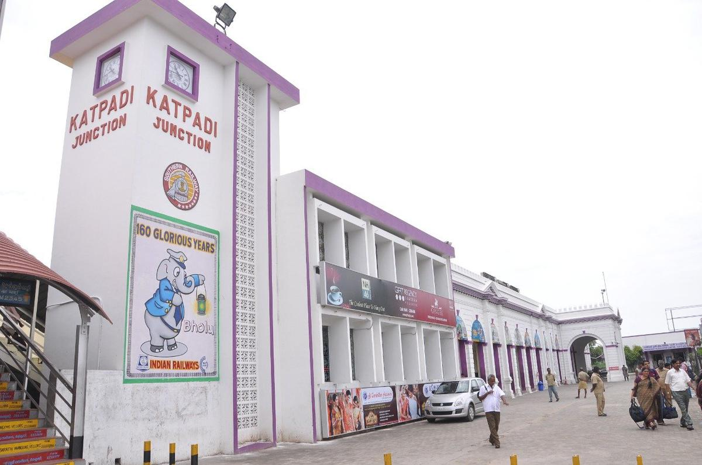

VELLORE
KATPADI

Katpadi junction is the railway station in Tamil Nadu, where highest number of trains stop. Major commuters to Katpadi station are people who travel to Vellore Golden Temple, CMC Hospital and VIT University. On an average it serves approximately 18,000 passengers daily, with 11 originating trains and 67 passing.
The station offers a wide range of facilities for the convenience of passengers, including ticket counters, waiting rooms, food stalls, and restrooms. It also has 5 platforms for the different trains that pass through the station, as well as a separate platform for long-distance trains.
Katpadi Junction is the primary terminus and junction of Fort City Vellore. Katpadi is the eighth highest revenue earning railway station in the Southern railway.